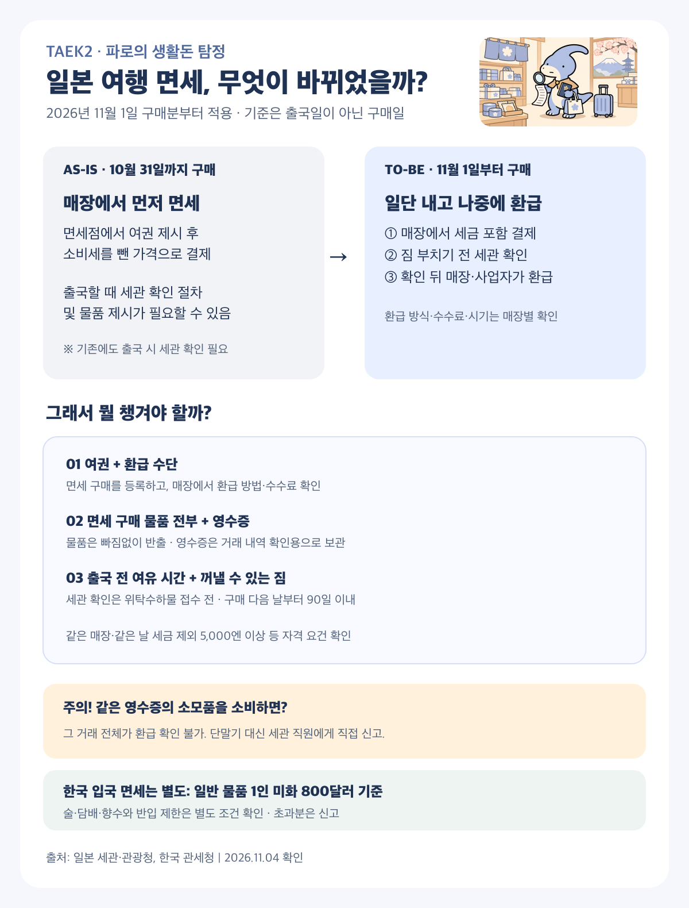
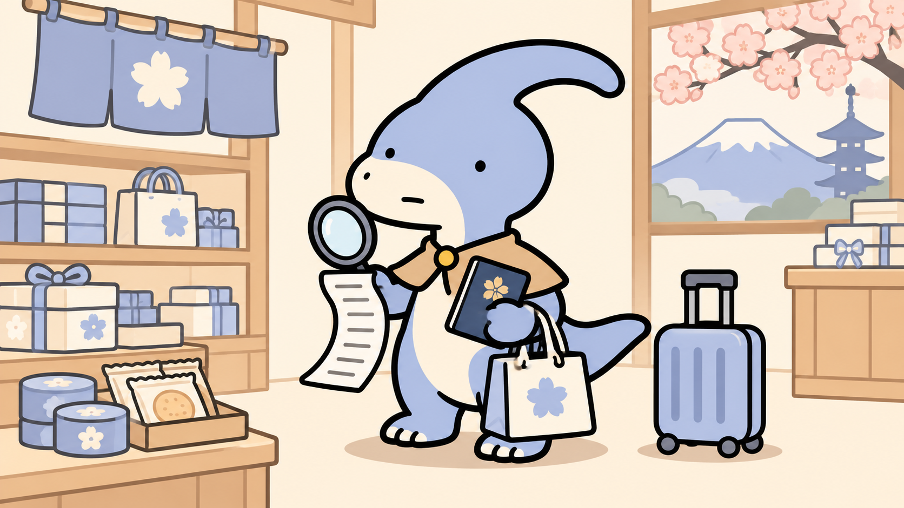
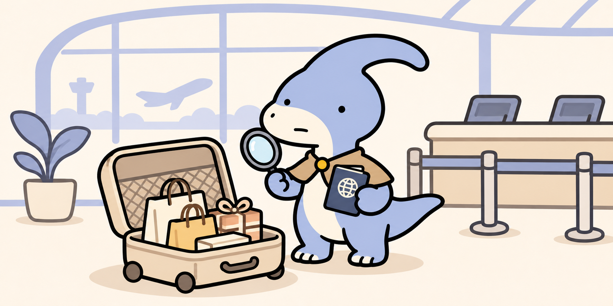

핵심: 면세점에서 세금 포함 결제 → 짐 부치기 전 일본 세관 확인 → 매장 안내에 따라 환급. 한국 입국 면세 기준은 따로 확인!
2026년 11월 1일 구매분부터 일본 여행자 면세는 세금을 포함해 결제하고 출국 시 세관 확인을 받은 뒤 환급받는 방식으로 바뀌었다. 일본의 소비세 환급과 한국 입국 때의 관세 면세는 별개다. 일본 세관
예전과 지금: 쇼핑할 때와 출국할 때 달라진 점
| 구분 | AS-IS: 2026년 10월 31일까지 구매 | TO-BE: 2026년 11월 1일부터 구매 |
|---|---|---|
| 매장에서 결제 | 면세 요건을 갖추면 소비세를 뺀 가격으로 결제 | 소비세를 포함한 가격으로 먼저 결제하고 환급 수단 등록 |
| 출국할 때 | 세관 확인 절차가 있고 물품 제시가 필요할 수 있음 | 구매 물품을 가지고 짐을 부치기 전에 세관 확인 |
| 돈을 돌려받는 때 | 구매 시 면세 또는 매장 카운터 환급 | 출국 시 확인 후 매장·환급 사업자가 정한 방식으로 환급 |
| 구매 물품 관리 | 기존 일반물품·소모품 구분과 포장 규칙 적용 | 구분과 특수포장 의무 폐지. 다만 환급 대상 물품을 국외로 가져가야 함 |
이제 챙길 것: 여권, 출국 시 제시할 면세 물품 전부, 거래를 확인할 영수증, 매장에서 안내한 환급 수단, 그리고 짐을 부치기 전 세관 확인할 시간이다. 영수증은 거래 확인을 위해 보관하는 것이고, 공식 절차상 여권을 통한 전자 기록 확인과 구분한다.

일본 면세 환급 절차 한눈에 보기에서 출국 전 체크리스트도 확인할 수 있다.
가장 먼저 할 일은 세 가지다. 면세점에서 여권을 제시하고 환급 방법을 등록한다. 물건을 일본 밖으로 가져갈 때까지 보관한다. 공항에서는 짐을 부치기 전에 세관 확인을 마친다. 일본에서 면세받았다고 한국 세관의 문도 자동으로 열리는 건 아니다.

예시 1: 돈키호테에서 과자와 화장품을 샀다면
가정해 보자. 면세 구매 자격이 있는 여행자가 11월에 돈키호테의 면세 취급 매장 한 곳에서 하루에 화장품을 세금 제외 6,000엔, 과자를 1,000엔에 산다. 둘 다 한국으로 가져갈 예정이라면 합계 7,000엔으로 최소 5,000엔 기준은 충족한다. 실제 매장의 대상 품목·수수료·환급 방법은 계산할 때 확인하자.
- 매장에서: 여권을 보여주고 면세 구매 기록과 환급 수단을 등록한 뒤, 세금 포함 가격을 결제한다. 영수증은 거래 확인을 위해 보관한다.
- 여행 중: 한국으로 가져갈 과자와 화장품은 일본에서 먹거나 사용하지 않는다. 호텔에서 먹을 과자는 일반 과세로 별도 구매하는 방법을 매장에 확인한다. 남은 면세 대상 구매분이 같은 매장·같은 날 세전 합계 5,000엔 이상인지 확인한다.
- 일본 공항에서: 여권과 구매 물품을 꺼낼 수 있게 준비해 짐을 부치기 전에 세관 확인을 한다. 단말기가 실물 확인을 요구하면 물품을 보여준다. 확인 후 환급은 매장 안내에 따라 진행된다.
- 한국에 도착해서: 일본에서 산 일반 물품과 국내 면세점 구매분 등의 과세가격을 함께 살펴 1인당 미화 800달러 기본 면세 범위와 신고 여부를 확인한다. 식품·의약품은 가격과 별개로 반입 제한도 확인한다.
만약 한 면세 구매 기록에 들어간 과자를 일본에서 먹었다면? 그 거래에 든 화장품이 남아 있어도 거래 전체가 환급 확인 대상에서 빠진다. 이 경우 면세 수속 단말기를 거치지 말고 세관 직원에게 소비한 사실을 직접 알린다. 일본 관광청 FAQ
편의점에서 산 과자는 그냥 먹어도 될까?
응. 편의점에서 과자나 음료를 일반 과세로 결제하고 호텔에서 먹는 건 괜찮다. 예를 들어 편의점에서 500엔어치 간식을 일반 결제해 먹었다면 그 간식의 소비세는 환급받지 않는다. 이 일반 구매는 다른 매장에서 별도로 면세 구매한 물품의 환급 조건에 영향을 주지 않는다.
주의할 건 편의점인지 돈키호테인지가 아니라 그 물품을 면세 구매로 등록했는지다. 일본에서 먹을 과자·마실 술은 일반 결제하고, 환급받을 구매 기록에 들어간 음식·화장품 등 소모품은 일본에서 소비하지 말고 가져가자. 면세 구매한 소모품을 전부 또는 일부 소비했다면 단말기를 거치지 말고 세관 직원에게 신고한다. 일본 관광청 FAQ
예시 2: 일본 위스키를 사서 한국에 가져온다면
성인 여행자 한 명이 면세 취급 매장에서 700mL 위스키 두 병, 합계 세금 제외 12,000엔에 구매하고, 두 병을 모두 한국으로 가져오는 가상 사례다. 환급 자격과 구매 조건을 충족한다는 가정이다. 여행 중 마실 술은 환급받을 술과 구분해 일반 과세로 사는 방법을 매장에 확인하자.
- 일본 매장: 여권을 제시하고 면세 구매 기록·환급 방법을 등록한 뒤 세금 포함 가격을 낸다. 세율 10%, 수수료가 없다는 가정이면 결제는 13,200엔, 조건 충족 후 세금 상당액 1,200엔 환급이다. 실제 환급액은 수수료·환율 등에 따라 다르다.
- 출국 전: 두 병을 개봉해 마시지 말고, 짐을 부치기 전에 일본 세관 확인을 받는다. 실물 확인을 요구받으면 보여줄 수 있어야 한다. 확인을 마친 뒤 병이 깨지지 않게 포장해 항공사 규정에 맞춰 위탁한다.
- 한국 입국: 두 병의 합계는 1.4L다. 현재 한국 관세청의 별도 주류 면세 기준인 총 2L 이하와 미화 400달러 이하를 모두 충족하고, 다른 주류가 없으며 여행자 휴대품 요건도 충족한다면 별도 주류 면세 범위 안이다. 12,000엔이 미화 400달러 이하인지 통관 시 적용되는 환율로 확인한다. 만 19세 미만은 주류 면세 범위가 없다. 한국 관세청
기준을 넘으면? 예를 들어 1L짜리 세 병은 합계 3L라서 가격이 400달러 이하여도 용량 기준을 넘는다. 미리 관세청 예상세액 조회를 이용하고 입국 시 자진 신고한다. 초과량만 단순히 비례 과세된다고 가정하지 말자.
술병을 비행기에 싣는 규칙과 세관 면세 기준도 서로 다르다. 시내에서 산 700mL 술은 국제선 보안검색의 액체류 제한 때문에 보통 기내 휴대가 어렵다. 일본 세관 확인을 먼저 받은 뒤 위탁수하물로 보내는 흐름을 확인하자. 주류 도수와 운송량에 따른 제한, 면세점 봉인 상품의 예외·환승 규정은 항공사와 출발 공항에 미리 확인한다. 일본항공 수하물 안내 · 인천공항 주류 안내
매장에서 세금을 먼저 내는 이유
10월 31일까지의 구매분은 기존의 구매 시 면세 방식이 적용된다. 11월 1일 이후 구매분은 세금 포함 가격을 먼저 지불하고, 공항이나 항구에서 반출 확인을 받은 다음 면세점이나 환급 사업자로부터 소비세 상당액을 돌려받는다. 기준은 출국일이 아니라 구매일이다. 환급 수단과 수수료, 입금 시점은 매장에서 확인하자. 공항에서 반드시 현금으로 즉시 받는 구조는 아니다. 일본 관광청 안내
일반적으로 같은 날 같은 매장에서 세금 제외 합계 5,000엔 이상이어야 한다. 지정된 공동 면세 수속 카운터에서 여러 점포 구매분을 합산하는 경우 등 예외가 있으므로 현장에서 확인한다. 면세 대상은 자격을 갖춘 여행자가 직접 국외로 가져갈 물품이며, 사업·재판매용 등은 제외된다.
과자 하나가 영수증 전체 환급을 막을 수 있다
새 제도에서는 일반 물품과 소모품 구분과 소모품 50만 엔 상한, 특수 포장 의무가 없어졌다. 그렇다고 면세로 산 과자나 화장품 같은 소모품을 일본에서 소비해도 된다는 뜻은 아니다. 소모품이 아닌 일반 물품은 사용했더라도 물품 자체를 소지해 반출하면 세관 확인이 가능하다. 출국할 때 같은 구매 기록에 들어간 물건이 하나라도 없으면 그 거래의 다른 면세 물품도 환급받지 못한다. 면세 구매한 소모품을 이미 전부 또는 일부 소비했다면 면세 수속 단말기를 거치지 말고 세관 직원에게 직접 신고해야 한다. 일본 관광청 FAQ
예를 들어 세금 제외 화장품 6,000엔과 과자 1,000엔을 한 영수증으로 면세 구매하고 과자를 여행 중 먹었다면, 남은 화장품까지 같은 거래의 환급 확인을 받지 못한다. 먹을 과자는 일반 과세 결제로 따로 사는 방법을 매장에서 확인하자. 이때 남겨 둔 면세 구매분도 최소 금액 등 조건을 충족해야 한다. 영수증을 나누기만 하면 무조건 환급된다는 뜻은 아니다.

출국일: 짐 부치기 전에 여권과 물건부터
- 구매 시: 면세 취급점에서 여권을 보여 주고 환급 수단을 등록한다. 영수증과 안내를 보관한다.
- 출국 시: 구매일 다음 날부터 90일째까지 공항·항구의 면세 수속 단말기에 여권을 제시한다. 일본 국세청은 11월 1일 구매의 기한을 다음 해 1월 30일로 예시한다.
- 단말기 결과: 초록색이면 세관 확인 완료, 빨간색이면 지정된 검사 장소에서 물건을 제시한다. 모든 사람이 실물 검사를 받는 것은 아니다.
- 그다음: 확인이 끝나면 항공사에 짐을 부치고 출국한다. 환급은 매장 또는 환급 사업자가 안내한 방식으로 진행한다.
나리타·하네다·간사이·주부·후쿠오카·신치토세·나하에서는 지정된 국제선 출발 로비에서 전용 Wi-Fi와 Visit Japan Web을 이용하는 방법도 있다. Visit Japan Web 방식은 단기체류·외교·공용 체류자격의 외국인이 대상이며 일본 국적자는 이용할 수 없다. 사전 준비가 필요하고 이용이 안 되면 공항 단말기를 이용한다. 단, 면세 소모품을 이미 소비한 경우에는 단말기 대신 직원에게 직접 신고한다. 일본 세관 · 국세청의 90일 계산
계산대에서 실제로 얼마를 준비할까
가정: 세금 제외 10,000엔인 일반 물품에 소비세 10%가 적용되고, 환급 수수료와 환율 변동은 없다. 매장에서 11,000엔을 내고 요건을 충족해 세금 상당액 1,000엔을 전부 환급받는다면 최종 부담은 10,000엔이다. 이는 원리 설명용 계산이며 실제 수수료, 환급 조건, 카드 환율에 따라 차이가 난다. 식품 등에는 다른 세율이 적용될 수 있으니 영수증을 확인하자.
한국 입국 때는 또 다른 기준을 본다
일본 소비세 환급은 일본에서 처리하는 절차다. 한국 입국 시에는 여행자 휴대품 면세 범위를 별도로 적용한다. 한국 관세청 안내의 일반 물품 기본 면세 범위는 1인당 미화 800달러이고, 국내 면세점 구매분 등도 함께 살핀다. 술·담배·향수는 별도 한도와 조건이 있다. 초과하거나 신고가 필요한 물품은 자진 신고하고, 관세청 예상세액 조회로 미리 살펴보자. 구체적 금액과 반입 가능 여부는 물품·상황에 따라 달라진다. 관세청 안내
환급받을 수 있는 물건인지 매장에서 확인
여행자 면세는 모든 해외 방문객의 모든 구매에 자동으로 적용되는 할인 쿠폰은 아니다. 자격을 갖춘 여행자가 면세 취급점에서 정해진 절차에 따라 구매하고, 물품을 직접 일본 밖으로 가져가야 한다. 매장에 여권을 보여 주고 면세 구매 기록이 등록되는지, 어떤 방법으로 환급받는지 확인하자.
구매 물품의 수량도 여행자가 직접 가지고 나갈 수 있는 범위여야 한다. 금·백금의 지금이나 소비세 비과세 상품, 명백한 사업·재판매 목적의 상품 등은 대상에서 빠진다. 애매한 물건은 결제 전에 매장에 물어보는 편이 좋다. 이미 결제한 물건이 자동으로 면세 구매로 등록된다고 가정하지 말자.
구매일이 경계에 걸친다면
출발일이 11월이라고 해서 여행 중 산 모든 물품을 같은 방식으로 계산하면 안 된다. 10월 31일에 산 상품과 11월 1일에 산 상품이 같은 가방에 있다면 구매일에 따라 각각 다른 제도가 적용된다. 영수증과 구매 내역을 나누어 챙기고, 출국장 안내에서 어떤 절차가 필요한지 확인하는 편이 안전하다.
반대로 11월 이후 면세 구매한 소모품을 이미 소비했다면 출국 날짜가 90일 이내여도 그 사실을 숨기고 단말기부터 이용해서는 안 된다. 영수증의 어느 물품을 사용했는지 세관 직원에게 말하고 안내를 받자. 다른 영수증에 있는 구매 기록은 별도 거래이므로 현장에서 각각 확인한다.
위탁 수하물로 보낼 상품이라도 검사 대상으로 지정될 수 있다. 캐리어를 접수하기 전에 여권과 물건을 쉽게 제시할 수 있도록 짐을 정리하자. 반대로 모든 승객이 세관 직원에게 물건을 직접 보여줘야 하는 것은 아니며, 단말기의 결과에 따라 안내를 따른다.
환급액과 통장 입금액이 다를 수 있는 까닭
앞의 1만 엔 예시는 수수료를 빼지 않은 가상 계산이다. 실제로 매장이 환급 대행사를 사용한다면 환급 수단과 수수료가 다를 수 있다. 예를 들어 세금 상당액이 1,000엔이고 안내받은 수수료가 200엔인 경우에만 단순 계산상 800엔을 돌려받는다. 이 숫자는 실제 업체의 요금표가 아니다.
카드로 환급받는 경우 원화 청구액이나 환급액은 결제일과 환급일의 환율, 카드사 조건에 따라 달라질 수 있다. 따라서 여행 예산에는 우선 세금 포함 결제 금액 전부를 넣고, 실제 환급금이 확인된 뒤 차액을 정리하는 것이 낫다. 환급받기 전부터 세금 상당액을 남은 현금처럼 계산하면 카드 결제일에 당황할 수 있다.
일본의 환급과 한국의 신고를 이어서 보기
일본 공항의 확인은 그 물건을 일본 밖으로 가져가는지 확인해 소비세 환급을 진행하는 단계다. 한국 세관의 판단은 한국에 들어오는 여행자 휴대품에 어떤 면세 범위와 반입 조건을 적용할지에 관한 단계다. 출발 공항에서 한 절차가 입국국의 신고를 자동으로 대신하지는 않는다.
면세 한도 계산은 일본에서 구매한 물건만 보는 일이 아니다. 한국 관세청은 국내 면세점 구매분을 포함해 휴대품의 과세가격 합계를 살피도록 안내한다. 주류·담배·향수 및 반입 제한 품목은 별도 조건이 있으므로, 금액만 보고 모든 물건이 통과된다고 판단하지 말고 관세청 조회와 안내를 확인하자.
출발 전 한 장 체크
- 여권을 제시하고 면세 구매 기록과 환급 수단을 확인했나?
- 일본에서 먹거나 쓸 물건과 국외 반출할 면세 물품을 구분했나?
- 구매일 다음 날부터 계산한 90일 기한 안에 출국하는가?
- 위탁 수하물 접수 전에 세관 확인을 받을 수 있도록 물건을 꺼낼 수 있나?
- 한국 입국 면세 범위와 신고·반입 제한을 확인했나?
공식 자료 확인일: 2026년 11월 4일. 이용 가능한 수속과 환급 조건은 출발 전 매장과 공항 안내를 다시 확인하자.
FAQ
10월 31일에 샀는데 11월에 출국하면? 구매일을 기준으로 10월 구매분은 기존 방식이 적용된다.
공항에서 반드시 현금으로 돌려받나? 아니다. 환급 방법과 수수료는 구매 매장에 확인한다.
참고 자료 및 공식 출처
관련 글
- 해외여행 체크카드 사용 이야기 — 과거 글이므로 카드 혜택은 현재 조건을 별도 확인.